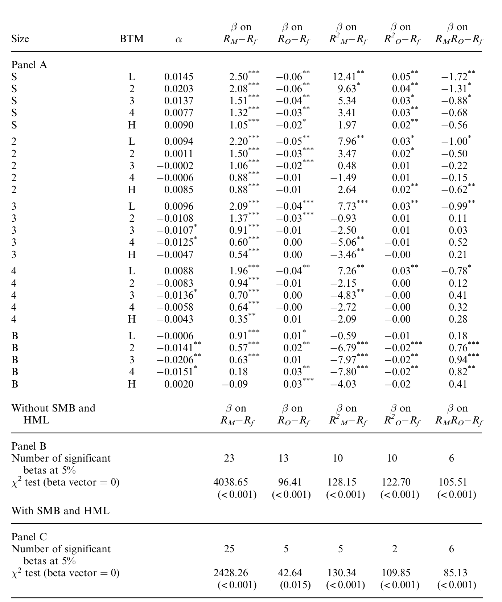
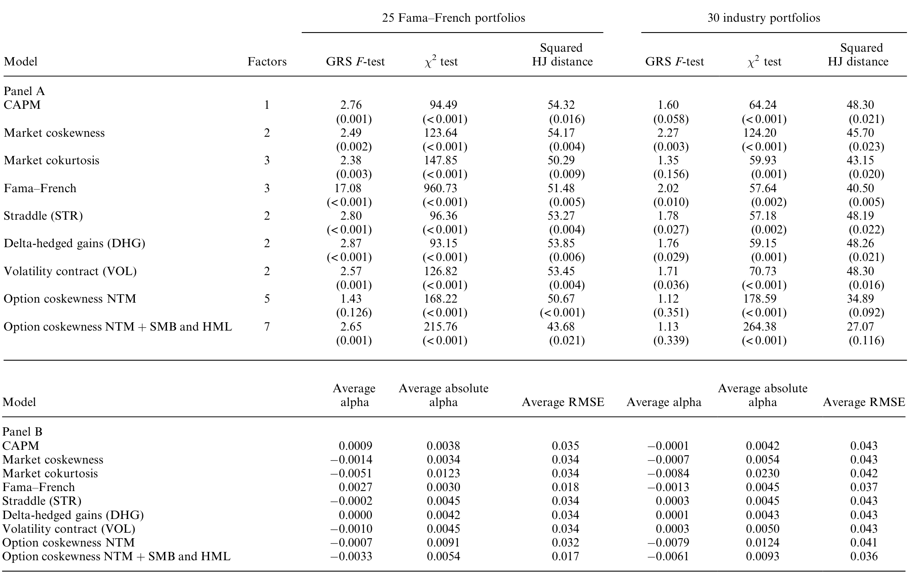
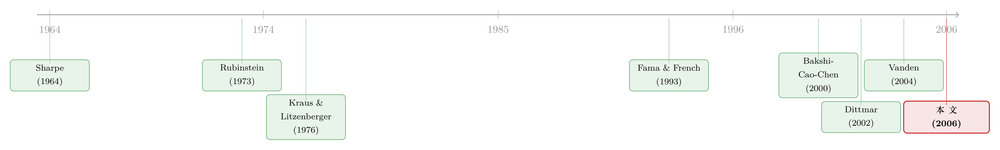

期权不该是配角：当衍生品第一次挤进「定价核」
本文读的是 Vanden (2006, Review of Financial Studies)：传统的「市场协偏度」三矩 CAPM 之所以把衍生品挡在门外，是因为它偷偷假设了一个代表性主体；一旦换成偏好异质的多主体，期权交易会内生地出现，随机折现因子里就不得不写进期权收益。由此得到的「期权协偏度模型」在实证上跑赢 CAPM、Fama–French 三因子以及市场协偏度/协峰度模型，而且它捕捉到的风险，竟与 SMB、HML 高度重叠。
1 一个被「踢出门外」的衍生品
先从一个几乎所有人都同意的事实说起：资本资产定价模型 (CAPM) 是错的——至少是「设定错误的」(misspecified)。
那怎么修？金融学过去三十年最常走的一条路，是往里加高阶矩。直觉很朴素：投资者不只在乎收益的均值和方差，还在乎它「歪不歪」（偏度）、「尾巴厚不厚」（峰度）。把代表性主体的边际效用做泰勒展开 (Taylor series)，保留到二阶，随机折现因子 (stochastic discount factor, SDF) 就是市场收益的二次多项式，于是市场协偏度 (market coskewness) 被定价；保留到三阶，SDF 是三次多项式，市场协峰度 (market cokurtosis) 被定价。前者是 Rubinstein (1973) 和 Kraus and Litzenberger (1976) 的经典三矩 CAPM，后者则被 Dittmar (2002) 系统分析过。
这条路看上去顺理成章。但它有一个被绝大多数人忽略的「副作用」——它把衍生品彻底赶出了定价舞台。
为什么？逻辑链其实只有三步。首先，代表性主体是「全市场」的化身；其次，衍生品是零净供给 (zero net supply) 的，多头和空头必然相互抵消；于是，代表性主体对任何衍生品的均衡持有量必然等于零。一个持有量为零的资产，自然不会进入他的边际替代率——也就不会进入 SDF。结论冷冰冰：在代表性主体的世界里，期权对股票定价毫无贡献。
这不是某个模型的小瑕疵，而是「代表性主体 + 零净供给」这对组合的必然推论。只要你坚持用一个主体代表整个市场，衍生品就一定是定价上的「配角」，甚至连配角都算不上。
2 可现实里，期权偏偏「不肯」当配角
接着，一个自然的问题是：现实真是这样吗？
证据指向相反的方向。Bakshi, Cao, and Chen (2000) 发现，S&P 500 指数的看涨期权价格，有时会在标的指数下跌时不降反升——这在「期权是标的的冗余资产」的世界里是不可能的。Coval and Shumway (2001) 直接度量了期权的预期收益，Buraschi and Jackwerth (2001) 与 Jones (2001) 也从不同角度确认：指数期权是非冗余 (nonredundant) 的资产，它们携带了标的现货里没有的信息。
而 Detemple and Selden (1991) 早就在理论上指出：如果期权真的非冗余，它就应该改变 SDF 的函数形式，就应该对股票横截面收益有发言权。
于是矛盾摆在面前：理论说衍生品无关紧要，数据说衍生品非冗余。本文要做的，就是把这道裂缝补上——而补的方式，是从根上拆掉那个制造矛盾的假设。
（关于把期权请进定价核这件事，本博客另有两篇可以对照着读：《定价核的「测谎仪」，为什么要请进期权？》 和 《期权太「短命」，因子模型怎么追得上它？》。）
3 真正关键的一步：让期权交易「自己长出来」
然后，本文的核心反转出现了：不要代表性主体。
设想经济里有两个或更多偏好异质 (heterogeneous) 的主体。如果他们的偏好都落在某个特定类里，那么——这是全文的题眼——市场组合上的看涨期权会内生地被最优交易出来。注意「内生」二字：作者既不像 Vanden (2004) 那样靠给主体加非负财富约束硬逼出期权需求，也不像 Glosten and Jagannathan (1994)、Agarwal and Naik (2004) 在业绩评估里直接假定期权就是定价因子。这里，期权交易是均衡的自然结果。
一旦每个人都在最优地持有期权，而均衡又是帕累托有效 (Pareto efficient) 的，那么任何一个主体的边际替代率都可以当作整个经济的 SDF——而这个 SDF，理所当然地依赖于被交易的期权。传统模型里那些「潜在波动率」之类的状态变量，不再直接进入 SDF，而是被期权收益及其高次幂吸收了进去。
最基本的版本只有两个主体、一份看涨期权合约。它的 SDF 长这样（论文记为 \(\Lambda\)）：
$$\Lambda = b_0 + b_1 R_M + b_2 R_O + b_3 R_M^2 + b_4 R_O^2 + b_5 R_M R_O$$
其中 \(R_M\) 是市场收益，\(R_O\) 是被交易期权的收益。
把它和老模型并排看，差别一目了然。因为 SDF 里有 \(R_M\) 和 \(R_M^2\)，与市场的协方差、协偏度仍然重要——老模型的所有直觉都保留了下来。但因为 SDF 里多出了 \(R_O\)、\(R_O^2\) 和 \(R_M R_O\)，与期权收益的协方差、与期权收益的协偏度 (coskewness with option returns)，以及市场和期权的交叉项，也都成了定价要素。正是后者，让这套模型被称为「期权协偏度模型」。
最妙的是它的嵌套结构：在期权需求为零的特殊情形下，\(b_2\)、\(b_4\)、\(b_5\) 全部等于零，期权协偏度模型干净利落地塌缩回 Rubinstein (1973) 的市场协偏度模型。换句话说，老模型不是被推翻，而是被包含——它只是「没有人交易期权」时的一个角落。
4 模型推导：从风险分担到一份看涨期权
这是一篇不折不扣的模型论文，值得把关键几步拆开看。
第一步：帕累托最优的刻画。 经济里有 \(i=1,2,\dots,I\) 个主体，两期。沿用 Wilson (1968)，帕累托最优的充要条件是存在一个函数 \(\varphi(S)\)，使得每个人的边际效用都被它「拉齐」：
$$U_i'(\hat W_i) = \lambda_i\, \varphi(S) \quad \text{for all } i, \qquad \sum_{j=1}^{I} \hat W_j = S$$
左式说所有主体的边际替代率相等，右式是资源约束（\(S\) 是date 1 的总产出）。\(\varphi(S)\) 正是 SDF 的雏形，\(\{\lambda_i\}\) 是非负权重。难点在于：给定一般效用函数，要解出风险分担规则 \(\hat W_i = g_i(S)\) 几乎是不可能的（Pratt, 2000）。
第二步：换一类偏好。 本文的技术心脏，是构造一类新的效用函数，用风险容忍度 (risk tolerance) 来定义：
$$-\frac{U_i'(W_i)}{U_i''(W_i)} = a\,W_i + h_i(W_i)$$
这里 \(a\) 是所有主体共享的「谨慎」参数 (cautiousness)，而 \(h_i(W_i)\) 是一个阶梯函数——在若干「转折财富水平」\(\xi_n^i\) 上跳变。当 \(h_i\) 取常数时，这退化为经典的线性风险容忍度类（Wilson 1968、Cass and Stiglitz 1970、Rubinstein 1974）；而它的阶梯结构，正是让分担规则「拐弯」的来源。\(a=0\) 给出分段指数（CARA）效用，\(a=1\) 给出分段对数效用，\(a=-\tfrac12\) 给出分段三次效用。
第三步：定理 1。 如果所有主体都用这类效用、且共享同一个 \(a\)，那么帕累托最优的风险分担规则是总财富的分段线性 (piecewise linear) 函数。
为什么分段线性如此重要？因为分段线性的分担规则，恰恰是可以在证券市场里用市场组合上的期权来实现的那一类——分担规则的每一个「拐点」(kink)，对应一份期权的执行价 \(K\)。而这些执行价是内生决定的：它们取决于权重 \(\{\lambda_j\}\)、初始财富分配 \(\{W_{0j}\}\) 和偏好参数。于是「谁更穷」会决定交易的是价内还是价外期权——若第二个主体相对初始财富越低，被交易的就越是价外 (OTM) 期权。
第四步：一个精确的例子。 取两个主体、\(a=-\tfrac12\)（三次效用），这正是 Rubinstein (1973) 那个经典三次效用经济的推广。求解 (1)–(2) 后，每个人的最优财富都包含三块：一项正比于 \(S\)、一个常数项、以及一项正比于 \(\max(0, S-K)\)——最后这块就是一份执行价为 \(K\)、零净供给的看涨期权。把最优财富代回，SDF 写成
$$\Lambda(S) = \big[\,d_0 - d_1 S - d_2 \max(0,\, S-K)\,\big]^{2}$$
其中 \(d_0=(\eta+\beta_1)A^{-1}\)，\(d_1=(2A)^{-1}\)，\(d_2=(A-B)(2AB)^{-1}\)。可以验证在 \(S\le K\) 和 \(S>K\) 两段上都有 \(\Lambda>0\)、\(\Lambda'<0\)、\(\Lambda''>0\)——这正对应两个主体都满足非饱和 (\(U'>0\))、风险厌恶 (\(U''<0\)) 与正偏度偏好 (\(U'''>0\))。
第五步：从赔付到收益。 把上式的平方展开，再从赔付换成收益，就精确地得到了第 3 节那个二次型 SDF（论文的方程 20）。注意「精确」二字：和泰勒展开式的三矩模型不同，这里不需要截断任何高阶项——期权协偏度模型本身就是一个 exact 的均衡结果，而不是近似。
这一点和本博客介绍过的《定价核的两副面孔》是同一种精神：SDF 的非线性形状本身，就是定价的关键，而不是可有可无的修正项。
5 实证：期权协偏度，跑赢了谁？
理论再漂亮，也要过数据这一关。本文用 S&P 500 指数期权构造期权收益 \(R_O\)，再去解释一组经典的测试资产。
作者先用近价 (near-the-money, NTM) 期权做多元回归，考察 \(R_M\)、\(R_O\) 以及它们的高次幂在解释横截面收益时各自的贡献，如表 4 所示。

Table 4: summarizes the multivariate regression results for the NTM
随后是真正的「擂台赛」：拿 25 个 Fama–French 规模/账面市值组合做测试资产，让期权协偏度模型与 CAPM、Fama–French 三因子模型、市场协偏度模型、市场协峰度模型同台联合检验，如表 6 所示。

Table 6: summarizes the joint test results. For the 25 Fama–French
结论有两层。第一层意料之中：期权协偏度模型在多个基准上胜出——加入期权相关矩之后，定价误差被显著压缩。第二层才是真正耐人寻味的——期权协偏度捕捉到的风险，与 Fama and French (1993) 的 SMB（小减大）和 HML（高减低）高度重叠。这暗示着一件事：驱动非冗余期权定价的那些力量，和撑起规模、价值因子的力量，很可能是同一批。
作者还顺手把框架推广到「期权协峰度」模型（论文 Table 7），考察更高一阶的矩是否还有增量解释力——这是把 Dittmar (2002) 的市场协峰度思路，平移到期权世界的自然延伸。
6 文献脉络
把这条线索拉直了看，故事其实很清楚。
源头是 Sharpe (1964) 和 Lintner (1965) 的 CAPM。面对它的实证失败，第一波修补来自高阶矩：Rubinstein (1973)、Kraus and Litzenberger (1976) 用三次效用导出市场协偏度三矩 CAPM，Friend and Westerfield (1980)、Scott and Horvath (1980) 进一步讨论偏度偏好；再往后，Fang and Lai (1997)、Dittmar (2002) 把维度推到协峰度，Harvey and Siddique (2000a) 则引入条件偏度。这一支的共同基因，是「代表性主体 + 泰勒展开」。

与此同时，另一支文献在拆「代表性主体」这块基石。Wilson (1968) 给出了风险分担与线性分担规则的经典刻画；Ross (1976)、Breeden and Litzenberger (1978) 说明期权如何补全市场。进入新世纪，Bakshi, Cao, and Chen (2000)、Coval and Shumway (2001) 等用数据反复确认：指数期权是非冗余的。Vanden (2004) 迈出关键一步，用财富约束逼出期权交易、把期权收益写进 CAPM。
本文 Vanden (2006) 正站在这两支的交汇处：它继承了高阶矩传统里「协偏度被定价」的洞见，又接过「期权非冗余」的实证压力，用一类带阶梯风险容忍度的异质偏好，内生地把期权请进了 SDF。它既不靠财富约束，也不靠武断假定因子——这是它区别于 Vanden (2004) 和 Glosten and Jagannathan (1994) 的地方。
7 评论与延伸（Q&A + 研究方向）
(a) 几个可能的疑问
Q：期权协偏度模型和老的市场协偏度模型，到底差在哪？
差在 SDF 多出了三项：\(R_O\)、\(R_O^2\)、\(R_M R_O\)。市场协偏度模型只看你与市场（及市场平方）的协动，期权协偏度模型还要看你与期权收益的协动。当期权需求为零（\(b_2=b_4=b_5=0\)）时，两者完全重合——老模型是新模型的一个角落。
Q：为什么「代表性主体」一定会把衍生品踢出定价？
衍生品零净供给，多空抵消，所以代表性主体（全市场的化身）的均衡持有量必为零。一个持仓为零的资产不进入他的边际替代率，也就不进入 SDF。这是「代表性主体 + 零净供给」的纯逻辑结论，与具体偏好无关。
Q：凭什么说「分段线性的风险分担」就等于在交易期权？
因为分段线性函数的每个拐点，都可以用一份执行价等于该拐点的期权来复制。定理 1 证明了在这类偏好下最优分担规则是分段线性的，而分段线性 = 市场组合 + 无风险债 + 若干看涨期权。执行价是内生的，取决于权重和初始财富。
Q：期权协偏度和 SMB/HML 重叠，是巧合还是有深意？
作者倾向于「有深意」：它暗示定价非冗余期权的风险，与规模、价值因子背后的风险是同源的。但要当心——重叠是统计相关，不等于结构上等同。两者可能只是对同一组潜在状态变量的不同投影，谁更「基本」还需更多结构性证据。
Q：只用一份 S&P 500 指数期权，去定价 25 个股票组合，外部有效性够吗？
这是个真问题。模型里「市场组合上的期权」是抽象对象，实证用单一指数期权近似。指数期权确实是关于整个市场的，但它能否承载所有横截面风险，尤其是个股层面的特质偏度，仍是开放的。多份期权、多个执行价的版本会更有说服力。
Q：这会不会只是「往 SDF 里多塞几个因子」的数据拟合？
不完全是。区别在于这些因子是内生推导出来的、有精确（非截断）的均衡基础，而非事后挑选。但平心而论，落到实证检验时，它仍然是一个把期权矩当解释变量的因子回归——理论的纪律性强，经验的可证伪性则和别的因子模型一样，得靠样本外表现说话。
(b) 几个可能的研究问题与提案
1. 把「期权协偏度」搬进公司债横截面。 【经济故事】按 Merton 的结构式视角，公司股权是公司价值上的看涨期权、公司债是「卖出看跌」。如果非冗余的指数期权携带了股票横截面的定价信息，那它对信用利差的横截面是否也有增量解释力？尤其在尾部，协偏度本就该咬人。 【可行性】中。数据有（TRACE 公司债成交 + OptionMetrics 指数期权），识别上的难点是把「期权协偏度」与已知的信用因子（违约、流动性）干净分离，需要小心的多重共线性处理。
2. 谁在真正交易这些期权？——异质主体的「实名化」。 【经济故事】模型把期权交易归因于偏好异质，但没说清现实中扮演「第二个主体」的是谁。是散户、对冲基金，还是外资持有人？如果能把 \(R_O\) 的定价贡献，对应到特定投资者群体的持仓变动上，就能给抽象的异质偏好一张「人脸」。 【可行性】中偏低。需要细颗粒的期权持仓/成交分类数据（如 CBOE 的投资者类别、13F 的衍生品敞口），匹配难、口径粗，识别更多是相关性而非因果。
3. 非冗余期权的「流动性那一块」是否溢出到股票？ 【经济故事】如果期权之所以非冗余，部分是因为它难以被复制、交易成本高，那么期权市场的流动性冲击应当通过 SDF 渗入股票横截面。这把本文的「矩」维度，和流动性维度接上了。 【可行性】中。指数期权的买卖价差、做市商库存可度量，关键是构造一个与市场协偏度正交的「期权流动性协动」，并验证它在股票上被定价。
4. 条件版本：从期权隐含矩里复原时变的协偏度。 【经济故事】本文是无条件检验，但偏度偏好和风险分担显然随状态变化。用期权价格直接反推隐含的高阶矩，构造条件期权协偏度，或许能解释 CAPM beta 在不同市场状态下的失灵（参见《跌的时候才显形：被 CAPM 漏掉的那半个 beta》）。 【可行性】高。OptionMetrics 隐含波动率曲面成熟，Bakshi–Kapadia–Madan 式的模型无关矩提取是标准工具，识别清晰、可直接做样本外预测。
8 我的判断与参考文献
这篇文章最漂亮的地方，不在于「又加了一个矩」，而在于它改变了问题的提法。过去三十年，「衍生品和股票定价无关」几乎被当成公理；本文用一个干净的均衡论证指出，这条公理完全依赖于「代表性主体」这个建模便利——一旦承认人是异质的，期权交易会自己冒出来，SDF 里就必须给期权留位置。把老的市场协偏度模型作为零期权需求的特例嵌套进来，更是让这套理论既有新意又有传承。
对识别的担忧也很直接。其一，理论里的「市场组合上的期权」是抽象对象，实证落地为单一 S&P 500 指数期权，二者之间的距离没有被充分讨论；其二，期权协偏度与 SMB、HML 的重叠，究竟是「同源风险」还是「同一信息的不同投影」，本文给的是相关性证据，结构性身份仍未钉死；其三，高阶矩的估计天然嘈杂，联合检验对 SDF 的设定相当敏感（这也是 Hansen–Jagannathan 距离类检验的老问题）。
我接下来最想看到的，是多期权、多执行价的版本：既然定理 1 允许有限多份期权对应多个拐点，那么用一整条执行价格栅格上的期权去定价横截面，应当比单份期权更有力，也能把「期权协偏度到底捕捉了什么风险」这件事讲得更具体。
参考文献
- Bakshi, G., C. Cao, and Z. Chen (2000). Do Call Prices and the Underlying Stock Always Move in the Same Direction? Review of Financial Studies 13(3), 549–584.
- Coval, J., and T. Shumway (2001). Expected Option Returns. Journal of Finance 56(3), 983–1009.
- Detemple, J., and L. Selden (1991). A General Equilibrium Analysis of Option and Stock Market Interactions. International Economic Review 32, 279–303.
- Dittmar, R. (2002). Nonlinear Pricing Kernels, Kurtosis Preference, and Evidence from the Cross-Section of Equity Returns. Journal of Finance 57(1), 369–403.
- Fama, E., and K. French (1993). Common Risk Factors in the Returns on Stocks and Bonds. Journal of Financial Economics 33, 3–56.
- Glosten, L., and R. Jagannathan (1994). A Contingent Claim Approach to Performance Evaluation. Journal of Empirical Finance 1, 133–160.
- Harvey, C., and A. Siddique (2000). Conditional Skewness in Asset Pricing Tests. Journal of Finance 55(3), 1263–1295.
- Kraus, A., and R. Litzenberger (1976). Skewness Preference and the Valuation of Risk Assets. Journal of Finance 31(4), 1085–1100.
- Rubinstein, M. (1973). The Fundamental Theorem of Parameter-Preference Security Valuation. Journal of Financial and Quantitative Analysis 8(1), 61–69.
- Sharpe, W. (1964). Capital Asset Prices: A Theory of Capital Market Equilibrium Under Conditions of Risk. Journal of Finance 19, 425–442.
- Vanden, J. (2004). Options Trading and the CAPM. Review of Financial Studies 17(1), 207–238.
- Wilson, R. (1968). The Theory of Syndicates. Econometrica 36, 119–132.